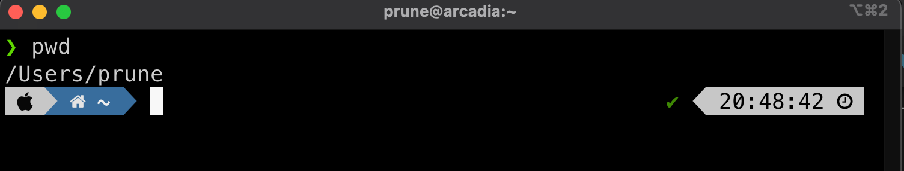
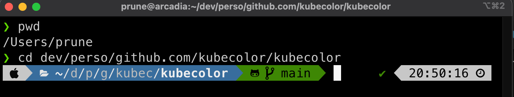
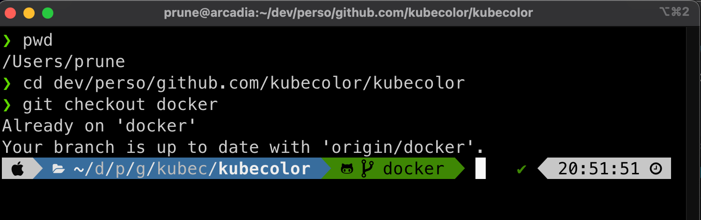
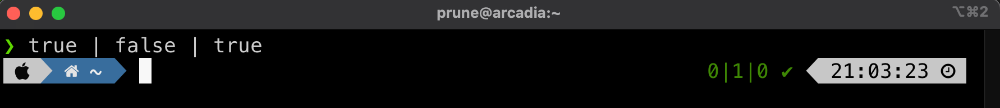
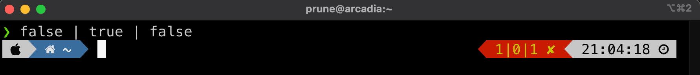
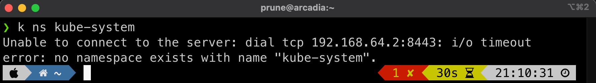

Kubie¶
Kubie offers context switching, namespace switching and prompt modification in a way that makes each shell independent from others.
This is an alternative to k ctx and k ns in a way where instead os switching your context back and forth and use the same context in all your terminals (all your shells), you pin one context per terminal.
Under the hood, it automates the use of the KUBECONFIG env variable to allow each shell to be configured differently.
Note
The KUBECONFIG variable, if set, will tell kubectl to use a specific config file instead of the default ~/.kube/config file.
Warning
It can be dangerous to use kubie as you may just enter a command in the wrong shell. It requires a little bit more of attention. Same thing as running rm -rf * and using ssh toward a production server.
It is easier to control when all your shells targets only one cluster and you need to use the –context parameter to switch.
At least, if you use Kubie, ensure your shell’s prompt is clearly displaying the cluster/namespace you’re in !
Then, it works almost the same as ctx/ns, except the selection is only for the current shell.
The cool feature is that you can execute a command in some (or all) of the contexts base on a regexp… it can be handy sometimes
Install¶
You can download a binary for Linux or OS X on the GitHub releases page.
Use curl or wget to download it. Don't forget to chmod +x the file:
TODO
Usage¶
-
display a selectable menu of contexts
-
display a selectable menu of namespaces
-
execute a command in all contexts matched by the wildcard and in the given namespace
Multi-Context Demo¶
Before we start using kubie, we have two contexts, one for the kind-demo and one for the kind-demo2 cluster. Let's switch to the kind-demo context:
Open a second shell/terminal, and run the same command but switch to the kind-demo2 context:
Go back in the previous shell, and check which context you're in:
The default context is still set to kind-demo2. This is because at this moment the context is global and set in the ~/.kube.config file. We can check that using grep:
In the first shell, use kubie to switch to the kind-demo2 context:
Now only one context is displayed. This is because kubie re-configured your context and statically pinned one cluster.
Under the hood, kubie used the KUBECONFIG env variable and set it to use a new config file:
KUBECONFIG=/var/folders/mt/b1zldbxs4wnf78m2p0mv444h0000gn/T/kubie-configMawRW2.yaml
KUBIE_KUBECONFIG=/var/folders/mt/b1zldbxs4wnf78m2p0mv444h0000gn/T/kubie-configMawRW2.yaml
~/.kube/config file but with only one cluster in it:
---
clusters:
- name: kind-demo2
cluster:
certificate-authority: /Users/prune/.kind-demo2/ca.crt
extensions:
- extension:
last-update: "Thu, 20 Oct 2022 18:17:15 EDT"
provider: kind.sigs.k8s.io
version: v1.27.1
name: cluster_info
server: "https://192.168.64.2:8443"
users:
- name: kind-demo2
user:
client-certificate: /Users/prune/.kind-demo2/profiles/kind-demo2/client.crt
client-key: /Users/prune/.kind-demo2/profiles/kind-demo2/client.key
contexts:
- name: kind-demo2
context:
cluster: kind-demo2
namespace: ~
user: kind-demo2
current-context: kind-demo2
apiVersion: v1
kind: Config
In the second shell/terminal, use kubie to switch to the kind-demo context:
This shell is in the kind-demo context. Go back to the first shell and check:
I don't know which context i'm using¶
Having two different context in two co-located shells is really dangerous. It's better to identify which cluster is selected before typing a kubectl command which could change some resources.
To solve this, the k ctx command is helpful and will highlight the current context. kubie info ctx will do the same.
thanks to Oh My ZSH! and the Powerline10k theme, the prompt is enhanced and now displays a ton of useful infos.
The default prompt is adaptative and depends on what command are typed in which folder. Here are some example:
Current folder¶
The left side of the prompt, in blue, shows the current folder.

When the folder is a git repo (contains a .git folder), the prompt is extended to show the branch name:

Switching to the docker branch changes the prompt:

If a file is modified, the prompt color switch to yellow:

Last command status¶
The right prompt shows the date by default.
When you run a command, a status extension is added. It is green in case of success and red in case of error.
If the command is composed of multiple commands with pipes, each command status will be reported:
 
When the command is failing with a delay, like a connection timeout, the duration is also added:

Kubernetes status¶
Some applications also benefit from a specific dynamic prompt, triggered by the name of the command.
If your shell is well configured, typing k or kubectl should add a new section to the right prompt that displays the current context:

When the selected namespace in NOT default, it is also added to the context:

Refer to Dynamic Prompt section to get more infos.
Next¶
Continue to explore the cool commands to look at logs